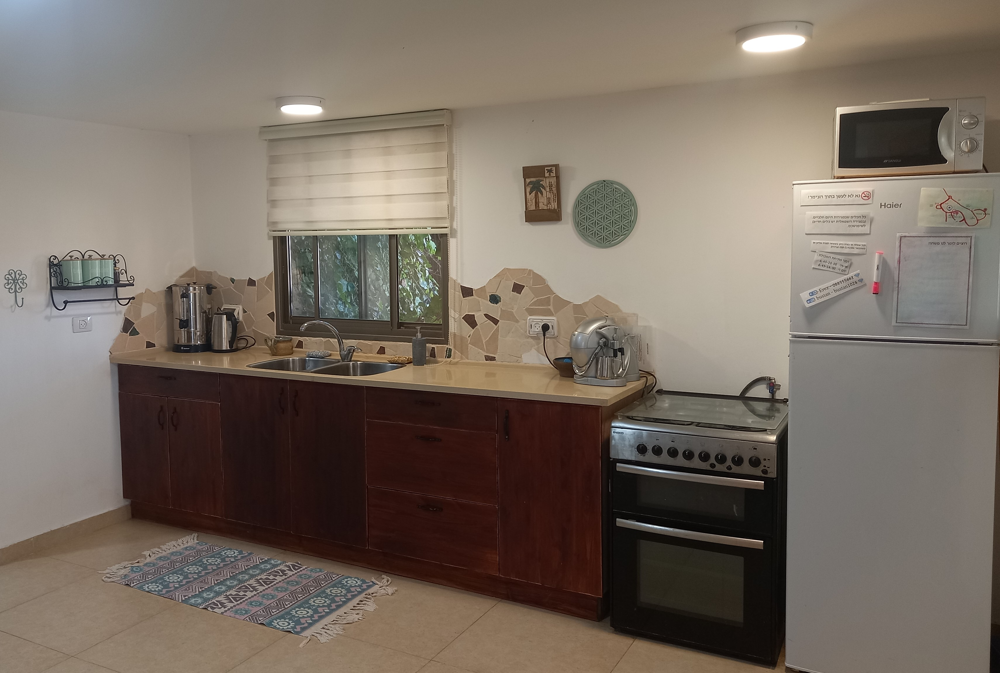
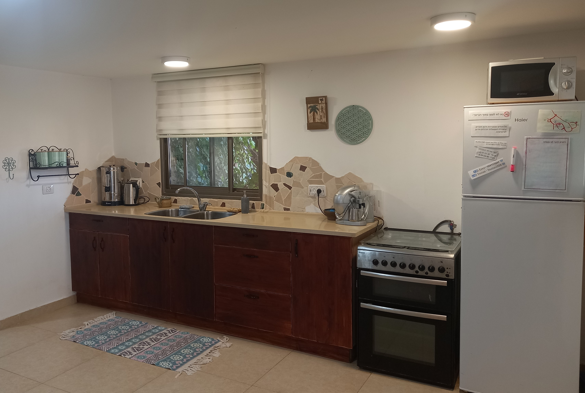

"Bustan on the Wadi" is zimmer in Merhav Am. A religious settlement in the Ramat Negev.
The zimmer is at the edge of the settlement on the desert.
Even though the zimmer is inside a settlement and under a house,
it has a sense of privacy and atmosphere and a view of the desert.
The zimmer and its surroundings are characterized by authenticity and warmth.